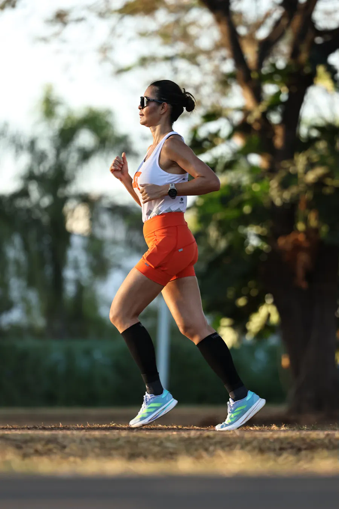
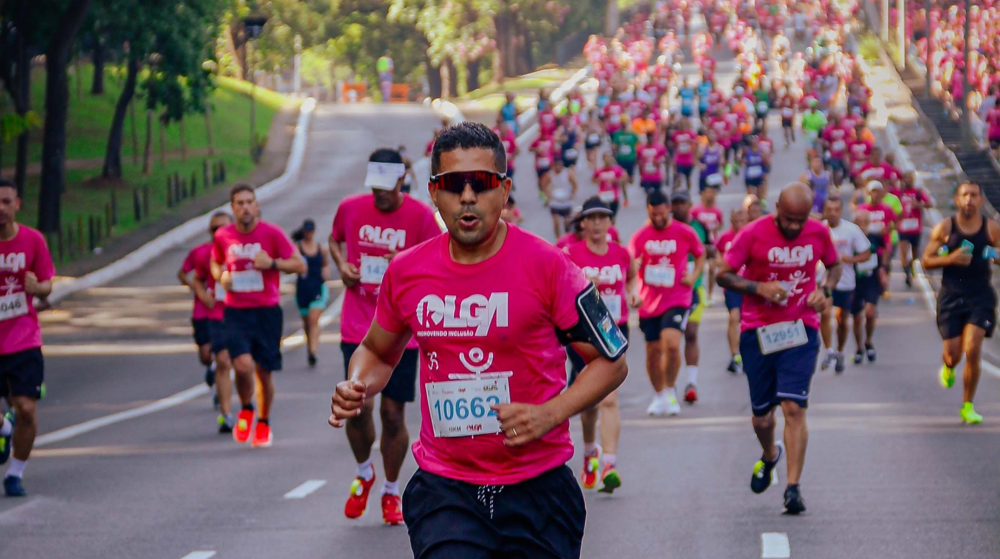
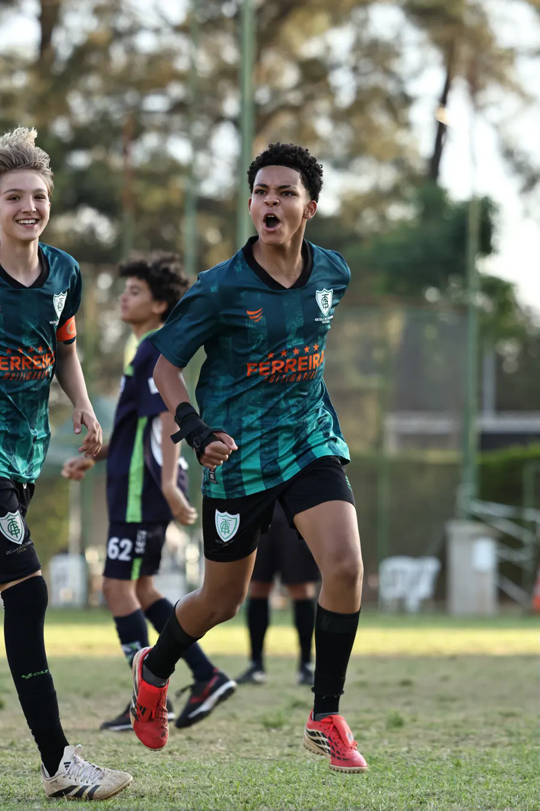
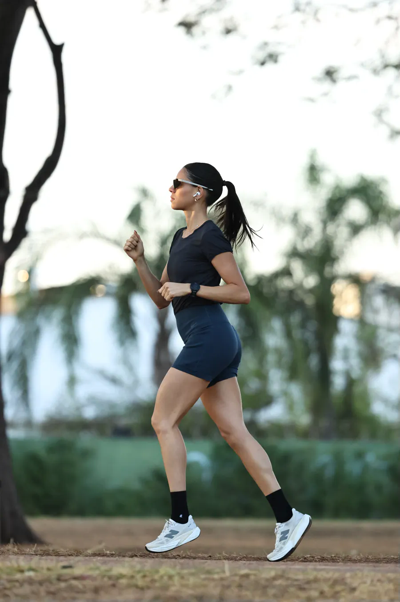
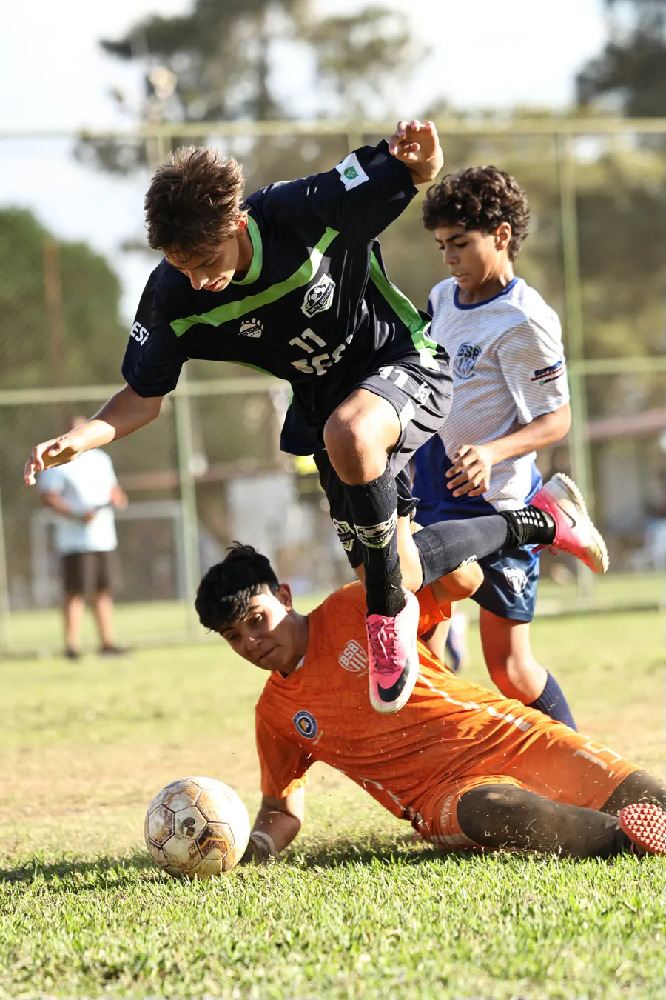
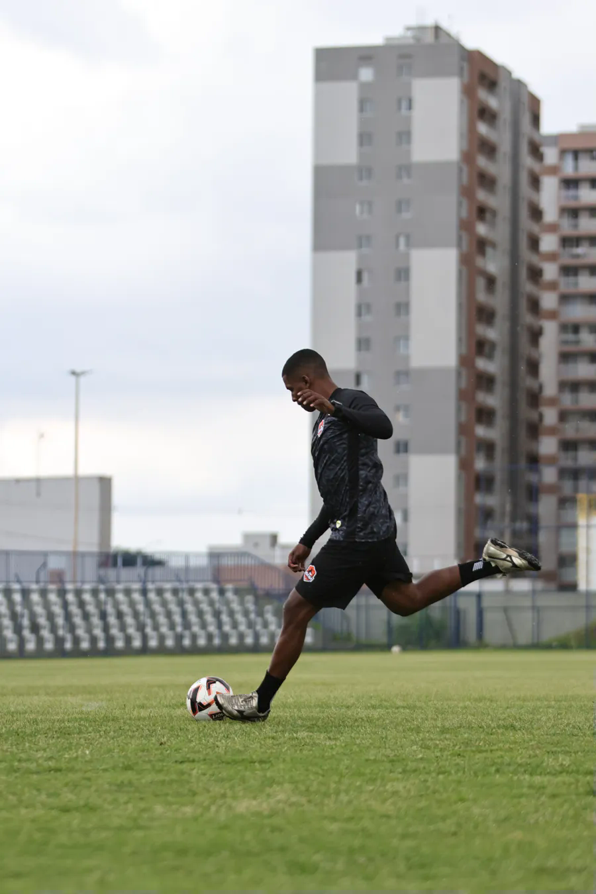
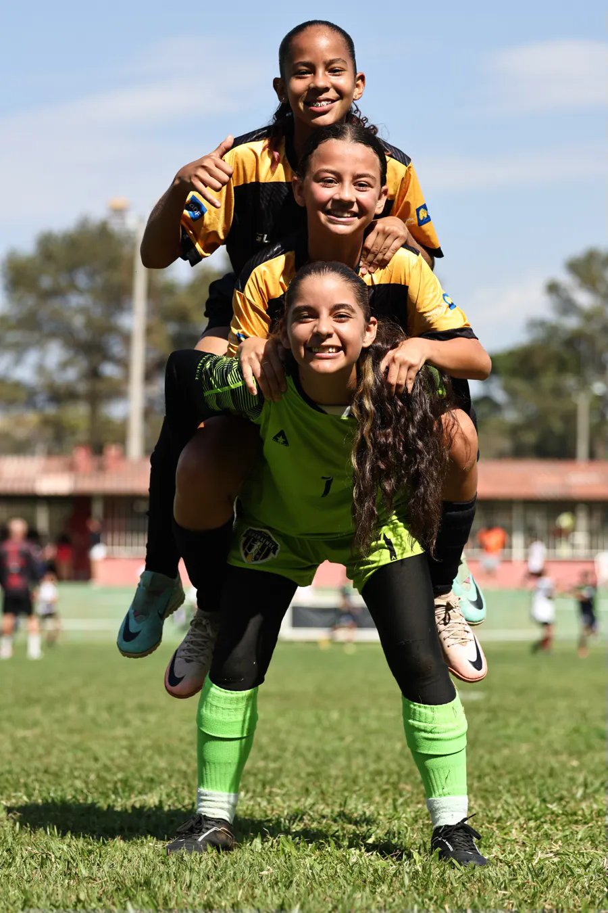
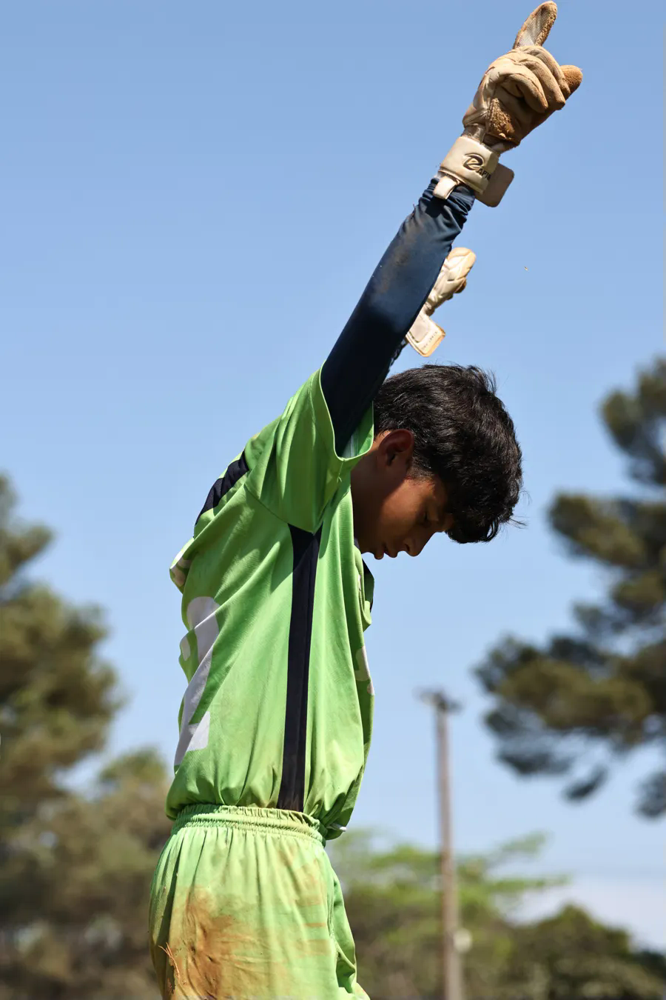
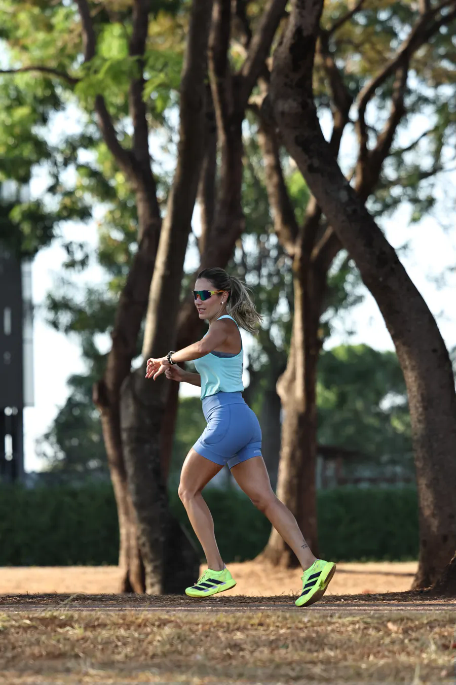

Cruzar a chegada já foi especial. Ter uma foto que traduz aquela emoção fez o momento durar muito mais.

Marina A.
Corrida de rua



LUCAS MARTINS · FOTOGRAFIA ESPORTIVA
Cada conquista tem uma história.
Encontre o registro da sua.
TODOS OS SEUS MOMENTOS, EM UM LUGAR
Escolha o álbum e acesse a plataforma
onde suas fotos estão disponíveis.
As fotos deste espaço são compradas em plataformas externas.
Você
escolhe o evento aqui e conclui a compra no site indicado no álbum.
CATÁLOGO DEMONSTRATIVO · NOMES, DATAS, PLATAFORMAS E LINKS A CONFIRMAR COM O LUCAS
Tente outro nome ou remova os filtros.
LOJA LM SPORTSFOTO
Uma nova forma de comprar suas fotos,
diretamente no site da LM SportsFoto.
Compra e download pelo site serão lançados em breve.
Por enquanto, encontre suas
fotos nos álbuns dos eventos.

FUTEBOL / EM CAMPOPORTFÓLIO / LM SPORTSFOTO
O instante da superação. A intensidade de uma partida. A emoção que só quem vive o esporte conhece.
FOTOGRAFIAS / LUCAS MARTINS
Performance, emoção e movimento.
Um pouco do olhar da LM SportsFoto.



POR TRÁS DAS LENTES
Lucas Martins
LM SportsFoto
Capturando performance, emoção e movimento.
Este espaço receberá a história do Lucas, sua trajetória na fotografia e um retrato pessoal. Estamos preparando cada detalhe com a identidade dele.
Acompanhe no Instagram ↗MEMÓRIAS QUE FICAM
Um espaço para as histórias de quem
vive o esporte diante das nossas lentes.
DEMONSTRAÇÃO Os seis depoimentos e nomes abaixo são fictícios. As imagens são ilustrativas e não representam as pessoas citadas.
Cruzar a chegada já foi especial. Ter uma foto que traduz aquela emoção fez o momento durar muito mais.

Corrida de rua
As fotos mostram a intensidade da partida e aqueles detalhes que a gente nem percebe dentro de campo.
Futebol amador
Gostei do cuidado com a luz e da naturalidade das imagens. Me reconheci em cada registro do treino.

Ensaio de atleta
Foi muito bom rever os momentos da prova. As imagens contam a história do dia, do aquecimento à conquista.
Cobertura de evento
Nossa equipe ganhou uma lembrança muito bonita. As fotos registraram a energia e a união do grupo.
Esporte em equipe
A comemoração passou em segundos, mas o registro ficou. É uma lembrança que eu teria orgulho de guardar.
Competição esportiva
DO EVENTO À SUA GALERIA
Busque pela modalidade, nome ou local.
Abra o álbum na plataforma indicada e encontre seus registros favoritos.
Nos álbuns externos, finalize a compra e receba os arquivos pela plataforma indicada.
ANTES DO PRÓXIMO CLIQUE
Respostas para encontrar suas fotos
e planejar sua próxima cobertura.
Encontre seu evento no catálogo, abra os detalhes e toque no botão da plataforma indicada. A compra acontece no site externo.
O pagamento e a entrega são realizados pela plataforma do álbum. Confira os prazos e as orientações informados por ela.
Tente buscar pelo nome, cidade ou período. Se ainda não encontrar, fale com o Lucas pelo contato disponível nesta página.
Preencha o formulário com a modalidade, o local e a data prevista. Você poderá revisar a mensagem no WhatsApp antes de enviá-la.
A loja própria ainda está em desenvolvimento. Por enquanto, use os álbuns dos eventos para comprar nas plataformas indicadas.
VAMOS CRIAR JUNTOS
Cobertura de eventos, treinos e projetos de vídeo de drone.
Conte um pouco sobre o
que você está planejando.